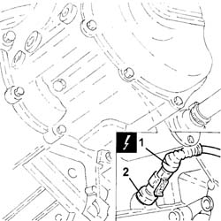

2127E52 hydraulic selection gearbox input shaft speed sensor - r r
- Path
- Procedures > 21 GEARBOX UNIT > 2127 ELECTRO-HYDRAULIC SELECTION. GEARBOX EXTERNAL. CONTROLS > 2127E electric speed selection system > 2127E52 hydraulic selection gearbox input shaft speed sensor - r r
- Kind
- repair procedure (removal / refitting; the operation number is the code)
- Applies to
- engines: 1.2 8v; all production periods
- Interactive page
- https://sloeber94.github.io/elrnDB-fPnd/en/#/2752692
Applies to: engines: 1.2 8v; all production periods
 Removing
Removing
 Refitting
RefittingRemove the car from the ramps.
Disconnect the battery negative terminal.
1. Disconnect the electrical connection of the speed sensor.
 | Name | Connector |
|---|---|---|
1 | Transmission output speed sensor | K77 |
2. Undo the sensor and remove it.

Applies to: engines: 1.2 8v; all production periods
Refitting
RemovingFit the gearbox speed sensor in its seating and tighten.
Connect the electrical connection to the gearbox speed sensor.
| Name | Connector |
|---|---|---|
- | Transmission output speed sensor | K77 |
Connect the battery negative terminal.
Remove the car from the ramps.